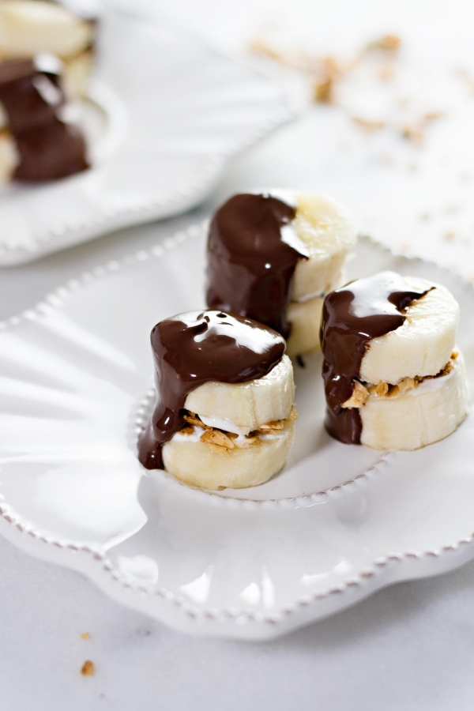

1-Healthy Banana S'mores Bites:
ingredients:
direction:
Slice the banana and melt the chocolate chips for 30-40 seconds.
Stir the chocolate.
Spread greek yogurt and granola
over a banana slice, using a second banana slice to make a sandwich.
Dip the banana in the chocolate, and enjoy!
2-Central American Salad In A Jar:
ingredients:
direction:
Finely chop the peaches and grape tomatoes. Add chia seeds to the salsa.
Cook the oats according to directions.
While the oats is cooking, chop the lettuce.
In a jar, layer the salad by filling the jar with the peach salsa first.
Then add the oats, black beans, queso, and lettuce.
Refrigerate until ready to serve. eat and enjoy!
3-Glazed Doughnuts:
ingredients:
direction:
1-Doughnuts:
Preheat oven to 350 F. In a medium mixing bowl, combine the dry ingredients (except for the yeast).
Heat the milk in a small bowl or cup for about 20 seconds in the microwave, then mix in the yeast. Set aside.
In a small mixing bowl,
combine the stevia, sugar, and the remaining liquid ingredients. Pour into the dry ingredients and mix.
Add in the
yeast mixture (which should be a paste) and mix.
Spray a doughnut pan with melted butter. Place dough in pan
and bake for about 15-20 minutes.
2-the glaze:
Mix the honey and sugar and water together to create the glaze. If you want a thicker glaze, add more sugar
. If the glaze is too thick
, add more honey.
Once doughnuts have completely cooked, top them with the glaze and enjoy!